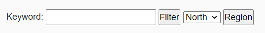

MVC Snake App

This project is an MVC designed for users who have either been bitten by a snake or are trying to identify a snake for some other reason. This project demonstrates knowledge of Entity frameworks code first database design. Further, it demonstrates working knowledge of CRUD implemnetation.
LINQ queries

This application has multiple filter types that use LINQ to query the database and find results based on the perameters given
Many-to-Many relationships

This application also demonstrates knowledge of Many to Many relationships and the use of View Models, data binding, LINQ, and CRUD methods to create objects that represent a Snake and Region (or many of these together)